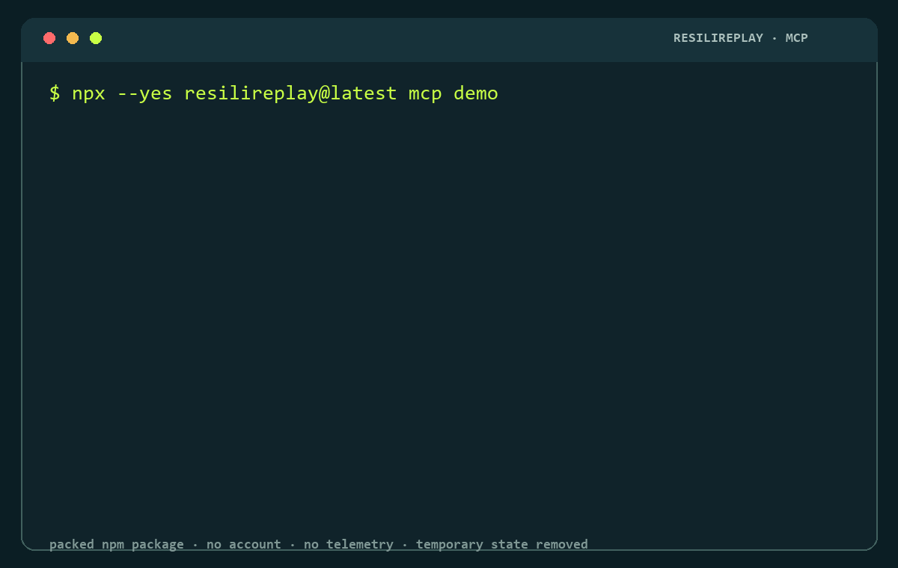

BEFORE
The happy path works.
Clean tool call ✓
Recovery behavior ?
Duplicate effects ?
Regression missing
v0.7.0 · MCP first · local by default
ResiliReplay injects deterministic MCP failures, verifies bounded recovery, and turns failures into executable regression tests.
Ten-second local workflow
Node.js 22 or 24. No checkout, pnpm, config, account, credential, or paid model.
npx --yes resilireplay@latest mcp demoExact packed-package output
The bundled fixture contacts no network target. Temporary state is removed after the generated regression executes; only the final SHA-256 evidence identity is printed.

Before and after
BEFORE
Clean tool call ✓
Recovery behavior ?
Duplicate effects ?
Regression missing
AFTER RESILIREPLAY
Deterministic failure ✓
Recovery bounded ✓
Duplicate effects 0
Regression executed ✓
Three jobs
01
Reproduce a declared MCP fault deterministically at a reviewable boundary.
02
Bound recovery and record duplicate-effect behavior under the approved policy.
03
Compile causal failure evidence into an executable test and run it in isolation.
Your reviewed MCP server
Dry-run starts nothing and writes nothing. It prints the selected transport, tool, fault, retry/time bounds, and SHA-256 approval identity.
npx --yes resilireplay@latest mcp test --config ./mcp.json --server my-server --tool echo --safety inert --dry-runReal public MCP subject
Cross-platform CI installs `@modelcontextprotocol/server-everything@2026.8.18` and the packed CLI in a clean npm project. A real SDK 1.30.0 client discovers and invokes inert `echo` over local stdio, injects `mcp-tool-error`, retries once, generates the regression, verifies cleanup, and scans evidence for credentials and private paths.
Exact version, npm integrity, SDK runtime, protocol revision, and operation.
One inert operation, one deterministic fault, one approved retry, finite timeouts.
Product-owned validation, not an independent adopter or vendor endorsement.
MCP-only support
| Surface | Evidence | Boundary |
|---|---|---|
| Bundled fixture | Fixture verified | Local, deterministic, zero network |
| Inspector stdio | Live verified | Real SDK process, reviewed tool, bounded recovery |
| Streamable HTTP | Live verified | Authenticated loopback fixture; explicit remote ownership |
| SSE | Protocol verified | Supported SDK transport and config import |
| Everything 2026.8.18 | Install + live verified | Pinned local stdio, inert echo, packed CLI |
Supporting credibility · MCP-RES v0.2
MCP-RES is the project-defined open evidence standard behind the result vocabulary. ResiliReplay is a reference implementation, not a required dependency. MCP-RES is independent of the official MCP specification and is not an official MCP standard, security certification, or endorsement.
Safety and scope
One selected config entry, one allowlisted tool, and an exact plan digest.
Tool bodies and arguments become bounded hashes before artifacts are written.
Path escape, mismatched overwrite, missing approval, secrets, and exhausted bounds fail.
ResiliReplay is not a sandbox or authorization layer. Commands run with your OS authority. Security policy · limitations
Secondary workflow
Genuine local/no-key evidence exists for LangGraph and OpenAI Agents SDK. Claude Code and Codex are installation- and fixture-verified; Hermes is installation-verified. Authenticated hosted models, billed calls, production APIs, and vendor endorsement are not claimed.